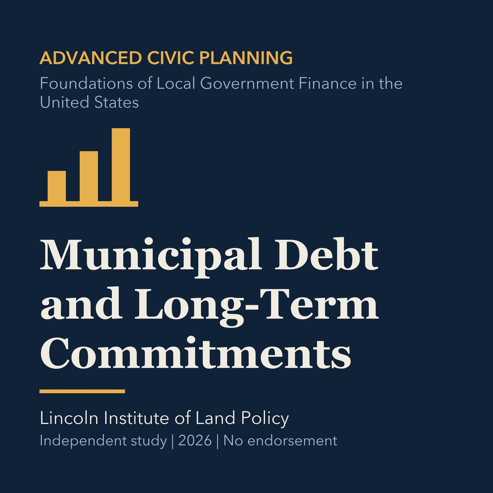

EPISODE 34
Municipal Debt and Long-Term Commitments
Explains debt structure, affordability, disclosure, and long-term fiscal commitments.

- Stable GUID
e0804a5a-3faf-516f-be22-a6160a22b8e9- Release
- advanced-civic-planning-v2026.1
- SHA-256
53668dcab7b7397cb599b72a71b372f5c021fd09e2de7138db460ccb12599b46